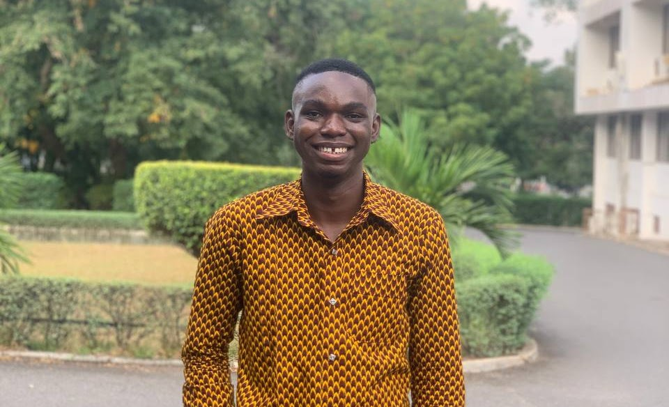

Spectral Properties
of Trees
Studied tree eigenvalue spectra, matching and characteristic polynomials, and relationships between graph structure and spectral properties.
Supervisor: Dr. Kenneth Dadedzi
Full thesis available on requestMathematics · Data · Graphs
I’m De-Graft Kofi Obeng, a mathematics graduate and MSc Big Data Analytics candidate at the University of Ghana. I explore how graph structure can help us build useful, reliable representations of data.
University of Ghana Accra, Ghana

DE-GRAFT KOFI OBENGFrom graph spectra
to learned representations.
01 / About
My work connects the mathematical study of graphs with empirical machine learning. In my undergraduate thesis, I studied the spectral properties of trees using linear algebra and combinatorial methods.
I am currently pursuing an MSc in Big Data Analytics, with interests in graph learning and reliable machine learning.
Alongside my studies, I work in research data analysis and curation at Pivot57 and teach undergraduate mathematics at the University of Ghana.
02 / Research & projects
Selected work across graph learning,
spectral theory, and applied mathematics.
Studied tree eigenvalue spectra, matching and characteristic polynomials, and relationships between graph structure and spectral properties.
Supervisor: Dr. Kenneth Dadedzi
Full thesis available on requestExplored applications of eigenvalues and eigenvectors to differential equations, connecting linear algebra with the analysis of dynamical systems.
Supervisor: Dr. Kenneth Dadedzi
Full document available on requestExplored the mathematical foundations of RSA through modular arithmetic and computational complexity.
Supervisor: Dr. Ralph Twum
Full document available on requestLooking ahead
I’m interested in graph representation learning and geometric machine learning, particularly spectral foundations, self-supervised learning, robustness, and generalisation.
03 / Experience
October 2025 — Present
Pivot57
Source and catalogue research data, support cleaning and standardisation, document metadata, and perform quality checks for analytics and ingestion pipelines.
September 2025 — Present
University of Ghana · Department of Mathematics
Support teaching in Algebra and Trigonometry and Calculus I under Dr. Collins Allan.
October 2024 — September 2025
University of Ghana · Department of Mathematics
Supported undergraduate mathematics courses, organised tutorials, provided individual student support, and marked quizzes and assignments.
04 / Education
October 2025 — Present
University of Ghana, Legon
In progressJanuary 2021 — April 2025
University of Ghana, Legon
Second Class Honours · Upper Division
Valedictorian
University of Ghana · Class of July 2025
05 / Contact
I welcome conversations about research opportunities and collaborations in graph learning and mathematical machine learning.
dkofiob@gmail.com